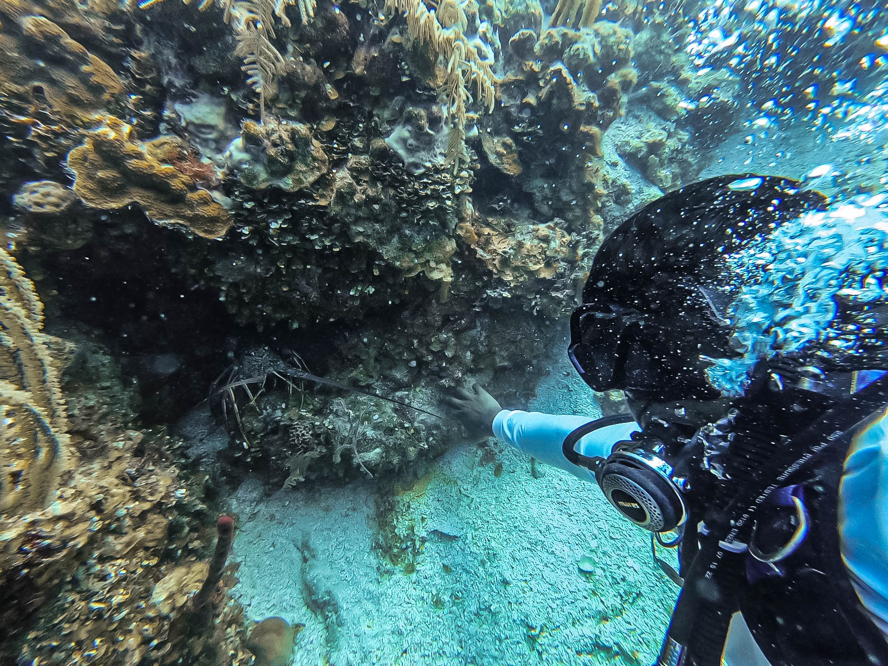

Dissolved oxygen in Corozal Bay
I used ArcGIS Pro and Python to aggregate station readings and map dissolved oxygen across the bay for June 2014.
I’m a marine biologist from Belize. I use GIS and R to explore questions about reefs, fisheries, and the waters that connect them.

I used ArcGIS Pro and Python to aggregate station readings and map dissolved oxygen across the bay for June 2014.
I reproduced an analysis of small-fish feeding bouts in R and simulated how underwater video survey effort affects what gets recorded.
I used R to simulate how survey effort and missed detections affect estimates of habitat use from baited underwater cameras.
An ArcGIS StoryMap that brings together maps, oxygen readings, and local context to examine the 2026 Belize River fish kill.
An R workflow examining how freezing and thawing affect lobster measurements used in fisheries size assessments.
An R analysis of relative abundance and habitat associations using baited underwater video survey data from Panama’s Las Perlas Archipelago.
Fieldwork, research, and technical experience in marine conservation and fisheries monitoring.
View CV